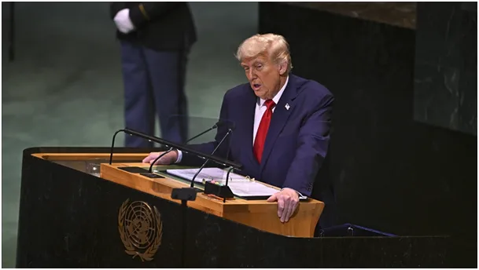
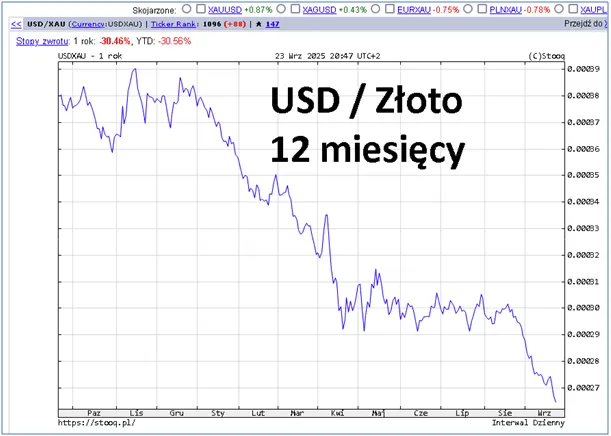

Fatalne wystąpienie Trumpa w ONZ, świat traci wiarę w wypłacalność USA.
"Chiny i Indie odpowiedzialne za wojnę na Ukrainie!" To jest przekaz Trumpa w ONZ, gdy wszyscy mówią o ludobójstwie w Palestynie.
Demaskacja przez Trumpa na forum ONZ globalnego ocieplenia polaryzuje i osłabia Europę, ale Palestyńczycy giną każdego dnia hurtowo w ciszy.
Indie balansują między wschodem i zachodem a Chiny mają dla nich coraz lepsze propozycje. Od kilku dni Trump powtarza w mediach, że Afganistan ma oddać USA bazę wojskową na terenie Afganistanu. To są fatalne słowa, w Azji ludzie są bardzo racjonalni i brak logiki oznacza upośledzenie. Dolar z dnia na dzień traci do złota tak szybko jak nigdy w historii, co oznacza, że świat stracił wiarę w amerykańską giełdę i rynek zachodnich inwestycji, a nawet obligacji. Po ludzku oznacza to, że świat traci wiarę, że USA będą w stanie przymuszać innych do używania ich waluty.

"Prezydent USA Donald Trump powiedział we wtorek, że przedłużająca się wojna na Ukrainie szkodzi wizerunkowi Rosji i oskarżył Chiny i Indie o finansowanie konfliktu poprzez zakup rosyjskiej ropy.
„Wszyscy myśleli, że Rosja wygra tę wojnę w trzy dni, ale tak się nie stało. To nie stawia Rosji w dobrym świetle. To stawia ją w złym świetle” – powiedział Trump w swoim przemówieniu do Zgromadzenia Ogólnego ONZ.
Amerykański przywódca stwierdził, że wojna „miała być tylko szybką potyczką”, ale trwa już 3,5 roku, pytając: „Ile jeszcze ludzkich istnień zostanie niepotrzebnie straconych po obu stronach?”
Za: www-aa-com-tr
Paweł Klimczewski